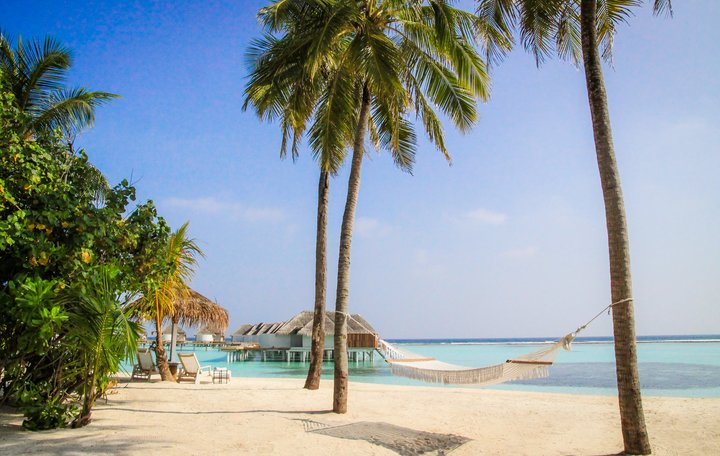
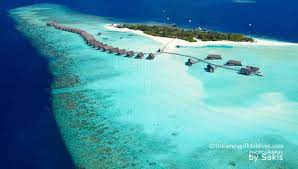
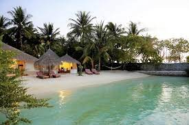

Plages des Maldives!
Presentation
Visiter les Maldives. Célèbres pour la beauté des plages et des fonds marins, les Maldives dessinent un paradis sur mer : lagons calmes aux eaux translucides et chaudes, poissons multicolores, plages paradisiaques, récifs coralliens, attirant près de 800 000 touristes chaque année. En dépit d’une régression des droits sociaux souvent déplorée, les Maldives attirent un grand nombre de voyageurs occidentaux en quête de beauté, de plages idylliques et de soleil tropical. La capitale est la ville la plus peuplée du pays, avec 142 909 habitants (2017) répartis – voire entassés – 5,8 km², avec une densité de population de plus de 17 884 hab./km².
Plage de cocoa island
Cocoa Island Beach est connue pour être la plus belle plage des Maldives. Elle a du sable blanc avec de grands palmiers, alignés le long du littoral pour fournir l’ombre et l’eau claire cristalline turquoise avec des tortues et des poissons de récifs, qui fournissent l’un des meilleurs sites de plongée aux Maldives avec son propre centre de plongée. Ils sont conçus avec une élégance extrême ayant un accès direct au lagon, offrant la meilleure plongée en apnée et la plongée en bouteille.
Nika island
Nika Island, située juste à 74kms de l’aéroport de Malé, est nommée d’après l’arbre majestueux Banyan appelé Nika en Dhivehi. Une plage de sable blanc avec un lagon profond et un récif magnifique. Pour rendre le séjour encore plus beau, Nika Island Resort propose les possibilités d’excursions d’île en île, y compris, la pêche de nuit et de la pêche au gros. En outre, ça peut s’avérer être un voyage étonnant pour un couple pour une lune de miel, car il assure une intimité totale en fournissant suffisamment d’espace entre les bungalows, vous rappelant un cadre proche de Robinson Crusoé. Même chaque bungalow a sa propre plage avec toutes les facilités et services, et l’on peut goûter à l’hospitalité des Maldives avec un style italien.
